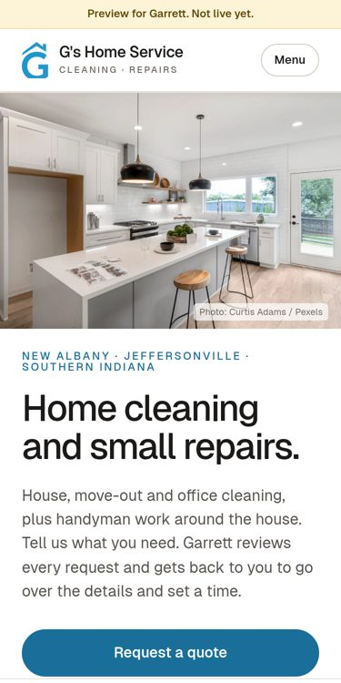
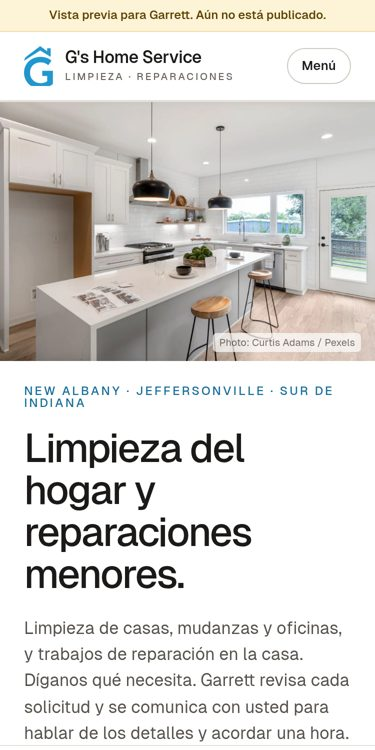

Garrett, here's your setup.
Everything below is built and ready to show. Four short parts: your website, your front desk, your first 30 days of marketing, and what it costs to start.
English and Spanish, built for phones.
Your name, your number (502) 660-8352, your services and a quote request form. Tap to open it.


Every call gets answered.
- Answers in English or Spanish. It switches when the caller does.
- Takes the job details. Name, number, town, what they need and when they'd like it.
- Never quotes prices or promises dates. It writes down what the caller prefers, and you confirm.
- Tells callers it's automated. It never pretends to be a person.
- Won't take card numbers. You handle payment yourself.
Front deskHi, thanks for calling G's Home Service. I'm the automated assistant, so I'll take down your details and Garrett will get back to you. How can I help today?
CallerI need a move-out cleaning for a 2-bedroom apartment in Jeffersonville. How much will that cost, just ballpark?
Front deskI can't give you a price, even a ballpark. Prices depend on the job, so Garrett gives every quote himself. Can I get your name?
CallerDana. Can you guarantee Saturday?
Front deskI can't promise a specific day or time, Dana. I'll pass along that Saturday morning is your preference, and Garrett will reach out to confirm.
ClienteNecesito limpieza de casa cada dos semanas. Tres recámaras y dos baños en Clarksville.
RecepciónPerfecto, con gusto le ayudo en español. ¿Cómo se llama?
ClienteMaría. ¿Traen sus propios productos de limpieza?
RecepciónNo quiero darle información incorrecta, así que voy a dejar esa pregunta anotada para que Garrett se la confirme cuando le llame.
2-minute walkthrough of your setup.
Your own phone line is the next step.
The first 30 days.
Claim and fill out your Google Business Profile: services, towns, hours and photos of your real jobs.
Turn on missed-call text-back. If you can't grab a call, the caller gets a text from your business within a minute, so they don't call the next name.
Start review requests. Two texts per finished job: one the same day, one reminder three days later. Never a third.
Look at the lead log together: every call, text and form, where it came from and what happened. Then decide what to do more of.
Homepage pilot: $1,000.
$500 to start.
- You pay the $500.
- KLC turns on the form and points gshomeservice.com at your new site.
- Then your phone line and campaign launch.